Stage: Première année¶
Auteur : Loris.R
Module : Stages
Sujet : Stage de Première Année
Outils Vus/utilisés¶
Datto: Logicielle RMM¶
Datto Remote Monitoring and Management (RMM) est une plateforme RMM sécurisée basée sur le cloud. Vous pouvez sécuriser, surveiller et gérer à distance les terminaux avec Datto RMM afin de réduire les coûts et d’améliorer l’efficacité du réseau.
Passbolt: Gestionnaire de Mots de Passe¶
Passbolt est un gestionnaire de mots de passe collaboratif : chaque utilisateur dispose de son coffre-fort personnel, mais il est tout à fait possible de partager des identifiants entre plusieurs utilisateurs. Pour partager les mots de passe des clients par exemple.
Unifi¶
La plateforme UniFi centralise la gestion des réseaux Wi-Fi, des commutateurs, des routeurs, et des caméras de surveillance, permettant aux administrateurs réseau d'avoir une vue d'ensemble et de contrôler les différents éléments via une seule interface.
Taches¶
Prises d'appels et Gestion de Tickets¶
Configuration d'un switch FortiGate 40F¶
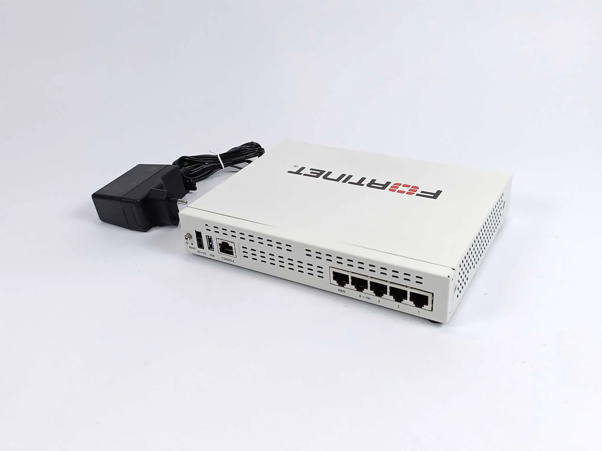
Accès à l'interface¶
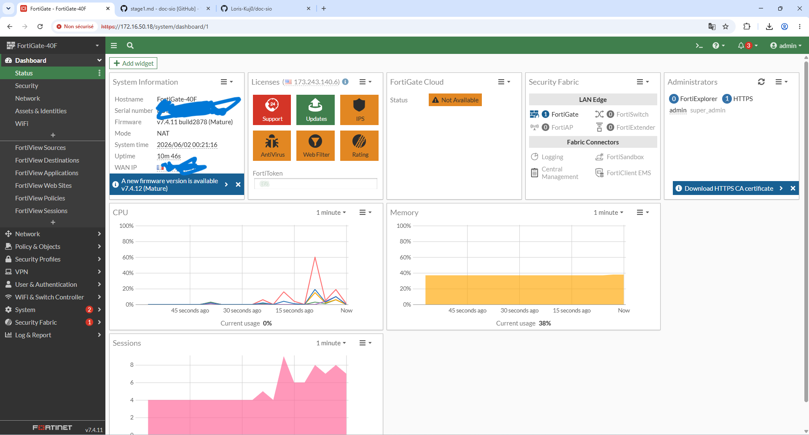
Activation du mode HTTPS/HTTP¶
Interface>Interface Pysique>WAN¶
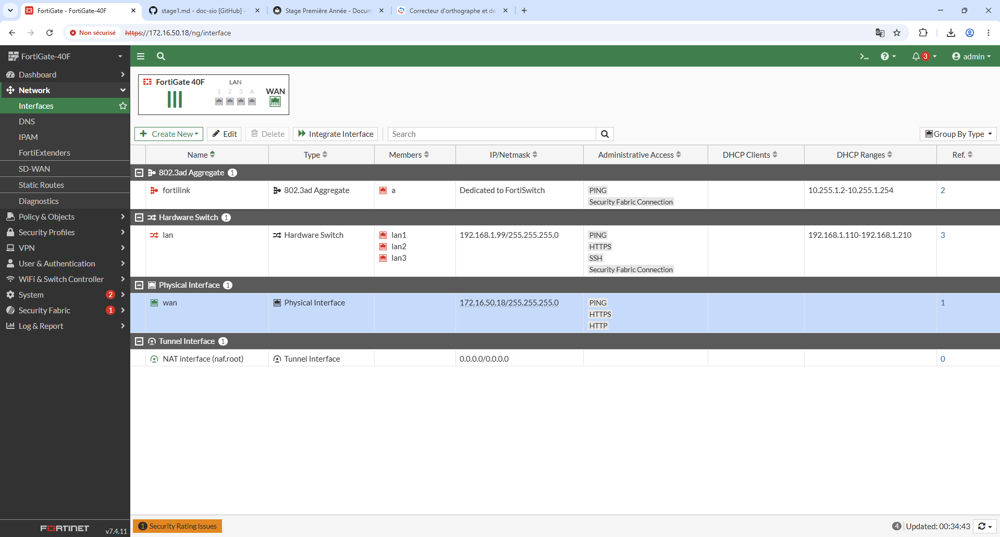
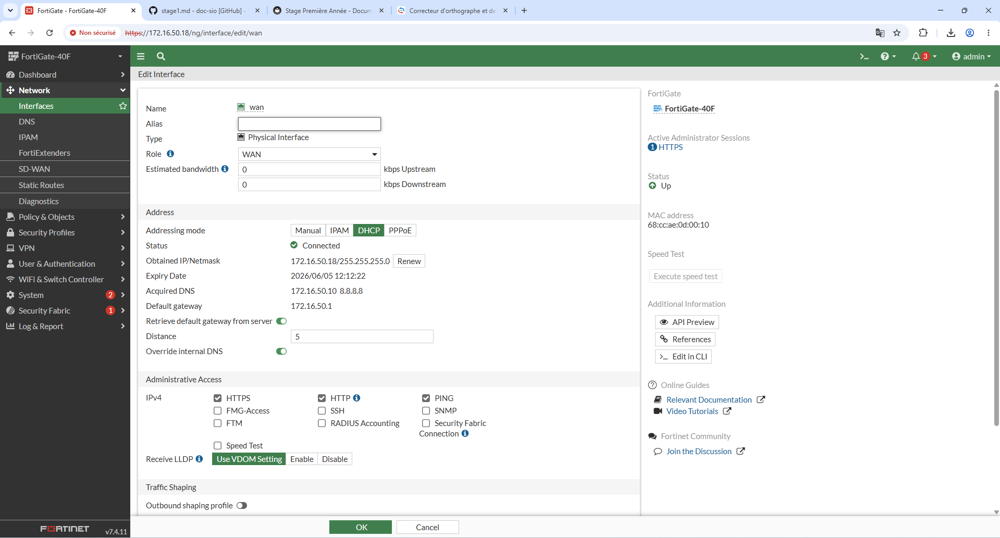
Mise à jour du Switch¶
System>Firmware & Registration>Upgrade¶
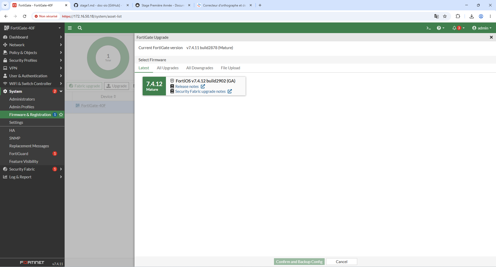
Configuration d'un VLAN¶
Création d'un VLAN "Natif"
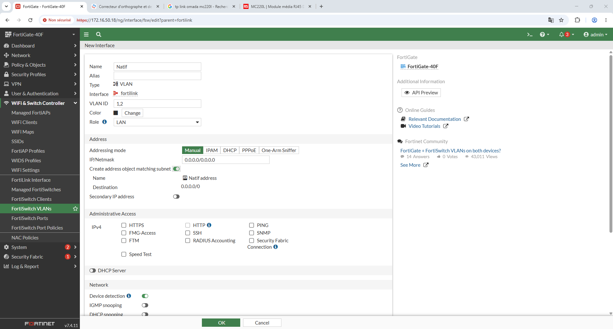
Comptes administrateurs¶
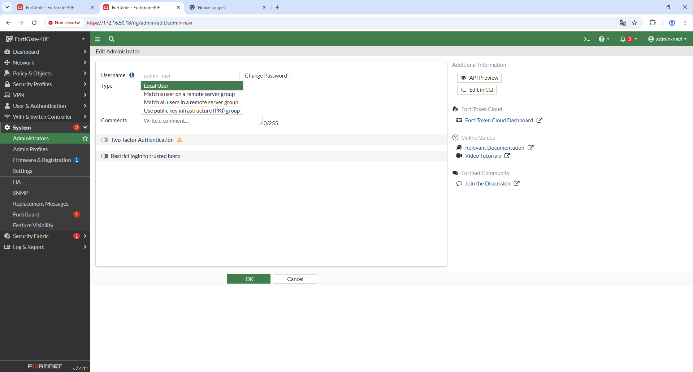
Nom d'hôte et Fuseau Horraire¶
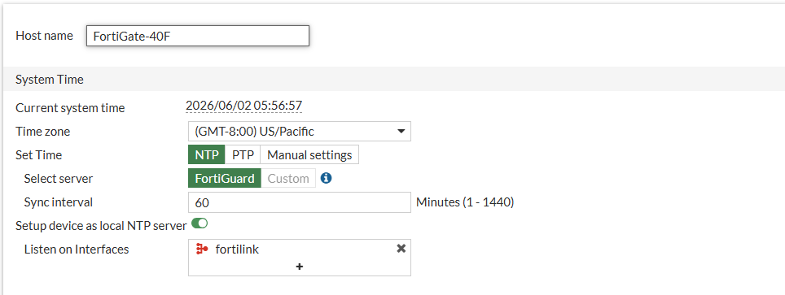
Restriction des accès (Trusted Hosts)¶
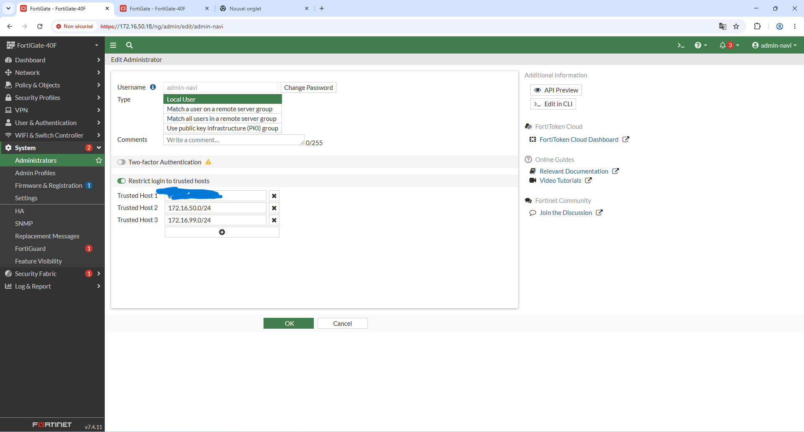
Ports d'administration et Idle Timeout¶
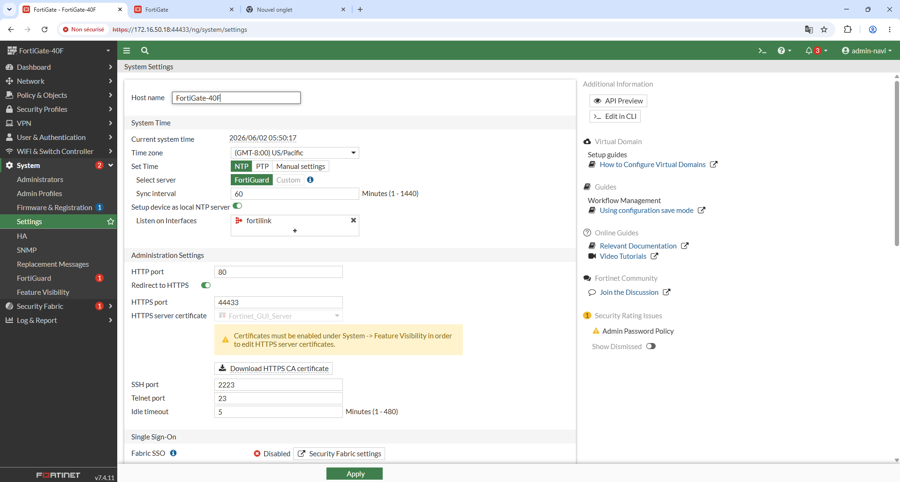
Visibilité des fonctionnalités (Feature Visibility)¶
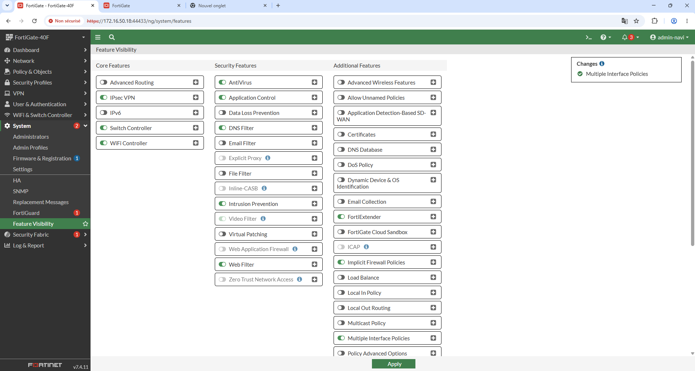
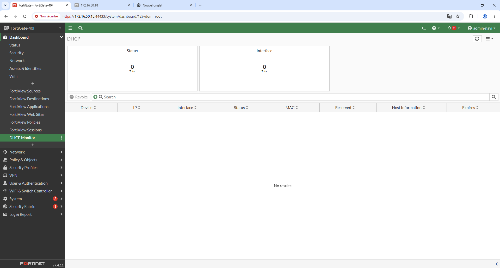